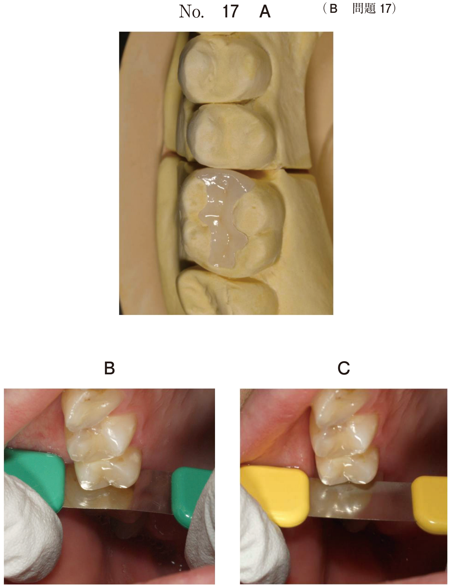
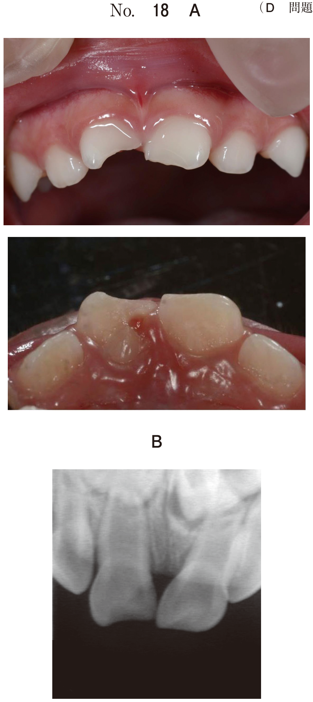

変色歯の治療は変色の程度と原因に応じて選択する。
| 分類 | 内容 |
|---|---|
| 広義のホワイトニング | クリーニング（PMTC）、漂白法、マニキュア、CR修復、ベニア修復など |
| 狭義のホワイトニング | 漂白法（ブリーチング）のみ |
| 方法 | 処置部位 | 適応 |
|---|---|---|
| ウォーキングブリーチ | 髄腔内から処置 | 失活歯（無髄歯）のみ |
| オフィスブリーチング | エナメル質表面から（診療室） | 生活歯・失活歯 |
| ホームブリーチング | エナメル質表面から（家庭） | 生活歯・失活歯 |
歯面に薄板状（laminate）の修復物を貼り合わせる（veneer）修復法。
| 特徴 | 説明 |
|---|---|
| 歯質切削 | 不要か、きわめて少ない |
| 麻酔 | 不要（形成はエナメル質内） |
| 審美性 | 優れる |
| アンテリアガイダンス | 影響しない（上顎歯の場合） |
| 侵襲性 | 患者への侵襲が少ない |
| 分類 | 方法 | 長所 | 短所 |
|---|---|---|---|
| 直接法 | CR直接法 | 麻酔不要、即日修復可能、補修修復可能 | 術者による審美性の違い、経時的変色 |
| 既製レジンシェル法 | － | ||
| 間接法 | CRベニア法 | － | |
| ポーセレンベニア法 | 優れた審美性、長期耐久性 | 技工操作必要、補修困難 | |
| 変色の程度 | 推奨される治療法 |
|---|---|
| 軽度（外来性着色） | PMTC、クリーニング |
| 軽度〜中等度 | 漂白法（ブリーチング） |
| 中等度〜重度 | ベニア修復、CR修復 |
| 重度・広範囲 | クラウン修復 |
漂白法は有機性着色物質に有効だが、無機性着色物質や深部の変色には無効。
漂白で改善しない場合 → CR修復またはベニア修復で対応
24歳の女性。歯の着色を主訴として来院した。治療中の口腔内写真（別冊No.23）を別に示す。
前装冠と比較した本治療法の利点はどれか。2つ選べ。

【解説】写真からラミネートベニア修復を行っていることがわかる。ベニア修復は形成がエナメル質内に限局するため無麻酔で形成可能。また上顎前歯では舌側面を切削しないためアンテリアガイダンスに影響しない。ブラキシズム患者では脱離・破折のリスクがあり禁忌。接着はエナメル質への接着が主体で象牙質プライマーは関係しない。
38歳の女性。歯の変色を主訴として来院した。生活歯漂白を行ったが、上顎両側中切歯に変色が残存した。初診時、術中および漂白処置後の口腔内写真（別冊No.24）を別に示す。
1┴1の矢印で示す変色に対する適切な処置はどれか。1つ選べ。

【解説】生活歯漂白を行っても残存した限局性の変色である。漂白法は有機性着色物質には有効だが、漂白で改善しない変色は無機性物質や深部の変色と考えられる。このような場合はCR修復で変色部を被覆するのが適切。PMTCは外来性着色に対する処置。ウォーキングブリーチは失活歯に対する処置であり生活歯には適応しない。陶材焼付金属冠は侵襲が大きすぎる。